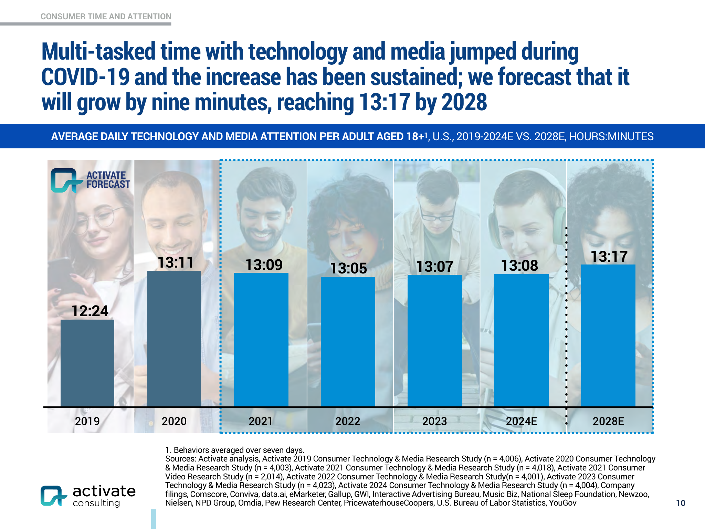

Activate’s Technology & Media Outlook 2025 projects $1.1T in incremental global tech and media growth over four years, with consumer internet/media reaching ~$3.0T and B2B tech/software ~$3.2T by 2028. Generative AI is already addressing 60% of search activity, accelerating shifts in discovery. Advertising drives over half of sector growth, led by connected TV and retail media, with retailers surpassing $100B in ad revenue by 2028. Super Users (24% of adults) and rising daily digital time underpin spending across eCommerce, gaming, and video.
Advertising >50% of Internet & Media Revenue Growth (2024–2028)

“Generative AI is rapidly transforming search and discovery, already addressing 60% of search activity today.” — Unknown
For brands, the mix should tilt toward retail media and connected TV, using retailer first-party data to close the loop on attribution and improve ROAS. As GenAI captures a larger share of discovery, measurement must extend beyond legacy SEO/SEM to include AI assistants and multi-touch paths that start in chat or retail ecosystems. Targeting Super Users can yield disproportionate returns, but requires creative tailored to high-intent segments and rapid testing in ad-tier streaming and social video. Given large eCommerce whitespace (> $2T), diversification across marketplaces, retail media networks, and AI-guided shopping will be key, with incrementality measurement built into every placement.